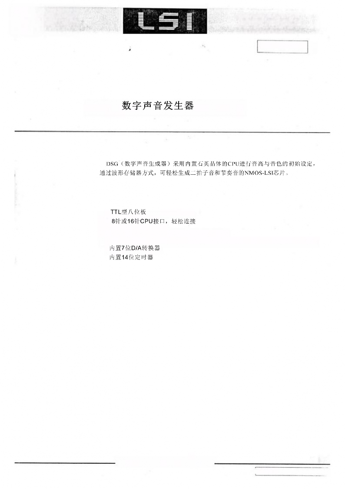
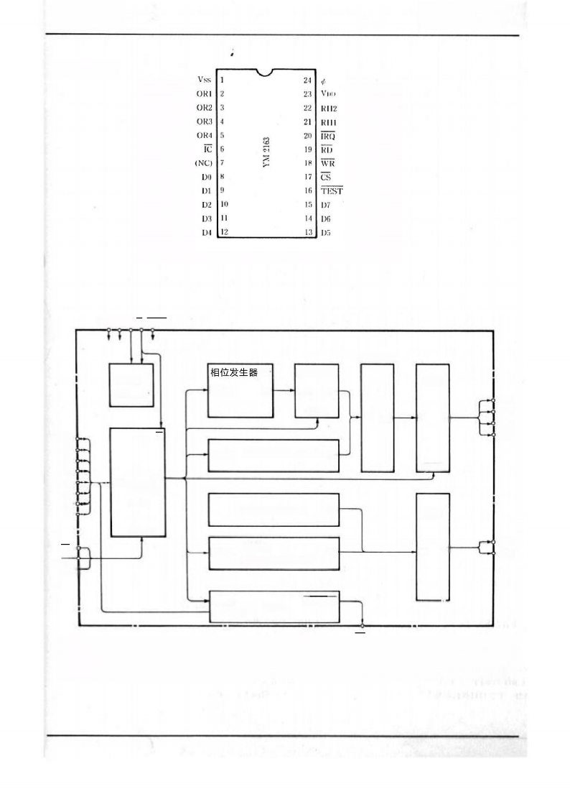
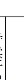
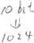
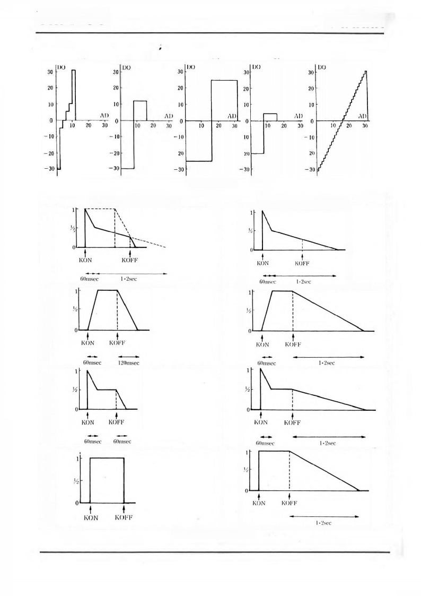
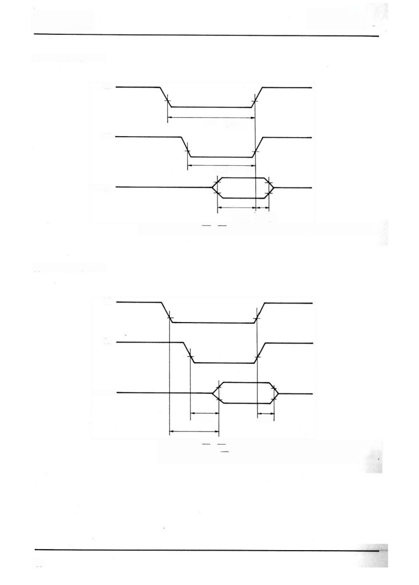
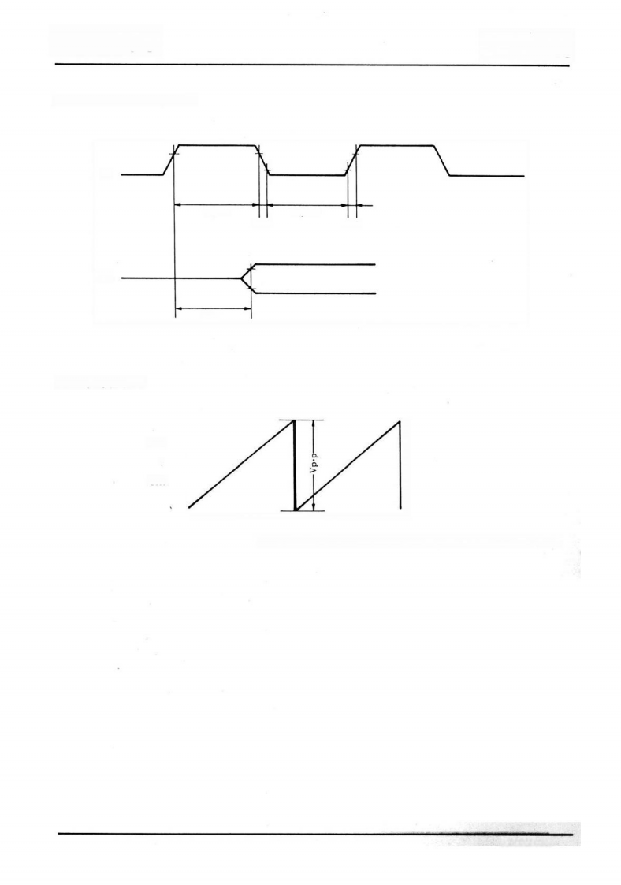
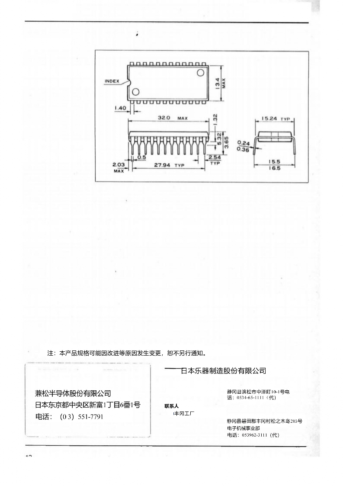

YAMAHA
YM 21 6 3
(DSG)
YM2163
N 0 . 84 - 04 2
■概 要
■特 長
5V单·电源N channel E/D MOS
●
●
●5种不同的乐音和4种不同的节奏音，可轻松产生4个八度音阶发音。
●
●
●24针DIL插座
日本乐器制造有限公司
目录No.LSl-1121630

YAMAHA YM2163
■端子配置图
■区块图
VSS VDD∮ IC TEST
倍增器
定时
发生器
CTRL DO
波形 ROM ADI DO
DAC
ORI
D0 R
Dl D2
D3
D4 DB DO
D5 电阻
D6 阵列
CTRL
CTRL DI DO DI O
包络生成器 DO
CTRL
OR2 OR3 OR4
D7
CTRL
CS WR RD
CTRL
节奏振荡器 DO
节奏
DO
包络生成器
DAC
O
DI
RHI RH2
CTRL
状态
计时器 状态
I
IRQ
2
YM2163 YAMAHA
■端子功能说明 [1]Vss 大地端子
[2]OR1～[5 ]OR4
音量输出端子（管弦乐音）。采用4音多路雷克斯式结构，通过模拟接口进行输出。该端子可独立选择将信号输出至4-0接口或4-1接口。
内部采用源极回路设计，通过外部负载电阻（标准1KΩ）可实现与节奏音（RH1、
RH2端子输出）的混音功能。
IC
初始清除端子。这个端子低等级时，将DSG内部寄存器的寄存器内容清零。
NC
DSG内部的两个端子均未进行电气连接。
[8] D0～[15] D7
数据输入端子。该端子用于向DSG内部寄存器阵列写入数据，同时作为输出端子读取内部定时器标志的状态。（参见表1）
[16]测试
这是用于测试LSI的端子。内部装有全阻抗电阻。通常情况下请勿将其连接到任何地方。
CS
芯片选择端子。当这个端子为高等级时，D0至D7数据总线端子进入高干扰状态，
DSG内部寄存器阵列的数据将被覆盖，此时无法读取故障标志状态。（参见表1）
WR
写入信号输入端子。从CS·WR·RD=“1”的状态切换至CS·WR=“0”的状态当发生转移时，路径数据会被写入寄存器阵列中。（参见表1）
RD
引导信号输入端子。使用CS·WR·RD=“1”将数据传输至数据总线端子（标志状态）
。该状态由DSG内部输出（参见表1）。
CS | WR | RD | D O～D 7的状态 | 备注 | |
a | 1 | * | * | 高饱和度 | *：不重要 |
b | 0 | 1 | 1 | 海因希坦斯 | 当发生c→b或c→a的转移时，路径数据会被写入寄存器阵列。 |
C | 0 | 0 | 1 | 输入（写入） | |
d | 0 | 1 | 0 | 输出（读取） | 正在读取标志状态。 |
e | 0 | 0 | 0 | （禁止） | 请勿使用此状态。 |
IRQ
表1 数据路径控制
当DSG内置定时器周期性设定的延迟状态发生反转时，CPU会生成分配请求信号（此时“0”处于激活状态），并将其输出至该端子。
当标志从数据总线接收到标志寄存器信号（FGR）为“1”时，将被拉低至低电平，此时IRQ信号将恢复为“1”。此外，中断使能信号（IEN）=0
当从数据通道将‘O’写入寄存器阵列时，其状态会受标志参数的影响。
将保持标志的IRQ=1。（标志被屏蔽。）
[21] RH1 [22] RH2
节奏音输出端子。RH1型大鼓音系的两个音，主音为RH2型音系的两个音，各自通过模拟的方式输出。内部配置为OR1~OR4端子上设有与之相同的S1-S2接口。（负载电阻为外接元件：标称值1kΩ）
3
YAMAHA YM2163
[23] VDD
电源端子（标称电压+5V）
[24] ∮
时钟脉冲（标准1 MHz）的输入端子。
功能说明
DSG的全部功能均由23个内置寄存器阵列进行控制。CPU通过寄存器阵列实现控制功能。只需将数据导入寄存器指令，声音生成就由DSG系统自动完成。根据各音块的配置，声
音将按顺序依次发声。
●音程分频器：一种用于调节乐音音程的精密装置。
●波形ROM：可存储乐音波形，支持无损音频。
包络发电机：可生成包络音效。
●多重音轨：创建附加包络音的乐音。
节奏振荡器：生成节奏音的频率成分。
节奏包络发生器：为节奏音效添加低频效果。
●D/A转换器：将计算结果转换为数字信号，同时将乐音和节奏音转换为数字信号。
此外，定时器通过计算寄存器阵列中设定的周期时间，生成CPU八分频的分频请求信号。
如表2所示，寄存器阵列的存储内容如下：当数据通道DO～D7的最高位D7被置为1时，该地址将被写入DSG内部寄存器阵列；若将D7置为0，则先前写入的地址D0～D6将被清零。已写入的数据原则上不会被覆盖保存（表2中带*号的数据显示，即使写入“1”，经过特定时间后也会自动恢复为“0”）。
4

;

(
(
)
)
*写入数据
地址 | D7 | D6 | D5 | D4 | D3 | D2 | D1 | D0 | 说明 | |||||
80H 81H 82H 83H | 0 0 0 0 | DV4 (0) (1) (2) (3) | DV3(0) (1) (2) (3) | DV2(0) (1) (2) (3) | DV1(0) (1) (2) (3) | DV0(0) (1) (2) (3) | DV1/2(0) (1) (2) (3) | DV1/4(0) (1) (2) (3) | 分周数(下位) | 乐 音 （ 管 弦 乐 音 ） | ||||
84H 85H 86H 87H | 0 0 0 0 | KON(O) (1) (2) (3) | FD(0) (1) (2) (3) | B2 (0) (1) (2) (3) | B1 (0) (1) (2) (3) | DV7(0) (1) (2) (3) | DV6(0) (1) (2) (3) | DV5(0) (1) (2) (3) | 按键接通 | 全八度音 | 八度音 | 分周数 上位 | ||
88H 89H 8AH 8BH | 0 0 0 0 | E2 (0) (1) (2) (3) | E1(0) (1) (2) (3) | SUS(0) (1) (2) (3) | W3 (0) (1) (2) (3) | W2 (0) (1) (2) (3) | W1 (0) (1) (2) (3) | 包络选择 | 持续开启 | 波形存储器 选择 | ||||
8CH 8DH 8EH 8FH | 0 0 0 0 | 测试1 2 3 4 | VL2(0) (1) (2) (3) | VL1(0) (1) (2) (3) | F4 (0) (1) (2) (3) | F3 (0) (1) (2) (3) | F2 (0) (1) (2) (3) | F1 (0) (1) (2) (3) | 测试 | 音量选择 | 输出过滤器选择 | |||
90H 91H 92 H 1/4 93H | 0 | FGR | IEN | HHD · | HHO · | SDN | HC · | BD · | 节奏触发器 | 节 奏 音 | ||||
有效挤入标志设置 | 保持等级 | |||||||||||||
94H 95H 96H 97H | 0 0 0 0 | LV4(0) (1) (2) (3) | LV3(0) (1) (2) (3) | LV2(0) (1) (2) (3) | LV1(0) (1) (2) (3) | LV0 (0) (1) (2) (3) | LH (0) (1) (2) (3) | (HH) (BD) (HC) (SDN) | ||||||
98H 99H 9AH 1/4 9BH | 0 | PT6 | PT5 | PT4 | pT3 | PT2 | PT1 | PT0 | 定时器周期(下位) | 定 时 器 | ||||
9 CH 9 DH 9 EH 1/4 9 FH | 0 | PT13 | PT12 | PT11 | PT10 | PT9 | PT8 | PT7 | 定时器周期(上位) | |||||
地址 | D7 | D6 | D5 | D4 | D3 | D2 | D1 | D0 | 说明 | |||||
80H 81H 82H 83H | 0 0 0 0 | DV4 (0) (1) (2) (3) | DV3(0) (1) (2) (3) | DV2(0) (1) (2) (3) | DV1(0) (1) (2) (3) | DV0(0) (1) (2) (3) | DV1/2(0) (1) (2) (3) | DV1/4(0) (1) (2) (3) | 分周数(下位) | 乐 音 （ 管 弦 乐 音 ） | ||||
84H 85H 86H 87H | 0 0 0 0 | KON(O) (1) (2) (3) | FD(0) (1) (2) (3) | B2 (0) (1) (2) (3) | B1 (0) (1) (2) (3) | DV7(0) (1) (2) (3) | DV6(0) (1) (2) (3) | DV5(0) (1) (2) (3) | 按键接通 | 全八度音 | 八度音 | 分周数 上位 | ||
88H 89H 8AH 8BH | 0 0 0 0 | E2 (0) (1) (2) (3) | E1(0) (1) (2) (3) | SUS(0) (1) (2) (3) | W3 (0) (1) (2) (3) | W2 (0) (1) (2) (3) | W1 (0) (1) (2) (3) | 包络选择 | 持续开启 | 波形存储器 选择 | ||||
8CH 8DH 8EH 8FH | 0 0 0 0 | 测试1 2 3 4 | VL2(0) (1) (2) (3) | VL1(0) (1) (2) (3) | F4 (0) (1) (2) (3) | F3 (0) (1) (2) (3) | F2 (0) (1) (2) (3) | F1 (0) (1) (2) (3) | 测试 | 音量选择 | 输出过滤器选择 | |||
90H 91H 92 H 1/4 93H | 0 | FGR | IEN | HHD · | HHO · | SDN | HC · | BD · | 节奏触发器 | 节 奏 音 | ||||
有效挤入标志设置 | 保持等级 | |||||||||||||
94H 95H 96H 97H | 0 0 0 0 | LV4(0) (1) (2) (3) | LV3(0) (1) (2) (3) | LV2(0) (1) (2) (3) | LV1(0) (1) (2) (3) | LV0 (0) (1) (2) (3) | LH (0) (1) (2) (3) | (HH) (BD) (HC) (SDN) | ||||||
98H 99H 9AH 1/4 9BH | 0 | PT6 | PT5 | PT4 | pT3 | PT2 | PT1 | PT0 | 定时器周期(下位) | 定 时 器 | ||||
9 CH 9 DH 9 EH 1/4 9 FH | 0 | PT13 | PT12 | PT11 | PT10 | PT9 | PT8 | PT7 | 定时器周期(上位) | |||||

节奏等级
节奏等级
*读取数据
(注)添字(0)~(3)表示发音频道。
地址 | D7 | D6 | D5 | D4 | D3 | D2 | D1 | D0 | 注解 |
无要求 | 标志 | 状态 |
表 2 DSG地址掩码
5
YAMAHA YM2163

(1) 频率与基离子·关闭数据设置（地址80H～87H）
当设置周数DV7～DV1/4和八度值B1、B2时，乐音的基本频率f
f /4 (1)(3 B1 2 B2)
7 2

( DVi) DV 12 DV 14
i 0
将在此处确定。
分周数 | |||||||||
上位 | 下位 | ||||||||
DV7 | DV6 | DV5 | DV 4 | DV 3 | DV 2 | DV1 | DV0 | DV1/2 | DV1/4 |
128 | 64 | 32 | 16 | 8 | 4 | 2 | 1 | 1/2 | 1/4 |
B2 | B | 取值 |
0 | 0 | 1 |
0 | 1 | 2 |
1 | 0 | 3 |
1 | 1 | 4 |
分周数 | |||||||||
上位 | 下位 | ||||||||
DV7 | DV6 | DV5 | DV 4 | DV 3 | DV 2 | DV1 | DV0 | DV1/2 | DV1/4 |
128 | 64 | 32 | 16 | 8 | 4 | 2 | 1 | 1/2 | 1/4 |
B2 | B | 取值 |
0 | 0 | 1 |
0 | 1 | 2 |
1 | 0 | 3 |
1 | 1 | 4 |

∮：DSG主时钟频率
在KO N 数据的设定中， 通过音节的发音开始和结束来控制节奏。FD 则采用与KO N
无关的衰减机制。
KON | |
0 | 按键关（衰减开始） |
1 | 按键开（发音开始） |
FD | |
0 | |
1 | 变形阻尼器（强制衰减） |
KON | |
0 | 按键关（衰减开始） |
1 | 按键开（发音开始） |
FD | |
0 | |
1 | 变形阻尼器（强制衰减） |
(2) 波形存储器包络的设置（地址88H～8BH）
音波和包络将根据以下数据进行选择。
持续指定 | |
SUS | |
0 | 持续关 |
1 | 持续开 |
波形存储器 | |||
W3 | W2 | W1 | |
0 | 0 | 0 | |
0 | 0 | 1 | St（弦乐） |
0 | 1 | 0 | 或（风琴） |
0 | 1 | 1 | Cl（单簧管） |
1 | 0 | 0 | Pf（希亚诺） |
1 | 0 | 1 | Hc（半四弦） |
1 | 1 | 0 | |
1 | 1 | 1 | |
波形存储器 | |||
W3 | W2 | W1 | |
0 | 0 | 0 | |
0 | 0 | 1 | St（弦乐） |
0 | 1 | 0 | 或（风琴） |
0 | 1 | 1 | Cl（单簧管） |
1 | 0 | 0 | Pf（希亚诺） |
1 | 0 | 1 | Hc（半四弦） |
1 | 1 | 0 | |
1 | 1 | 1 | |
包络选择 | ||
E2 | E1 | |
0 | 0 | 包络0（衰减音） |
0 | 1 | 包络1（持续音） |
1 | 0 | 包络2（持续音） |
1 | 1 | 包络3（持续音） |
包络选择 | ||
E2 | E1 | |
0 | 0 | 包络0（衰减音） |
0 | 1 | 包络1（持续音） |
1 | 0 | 包络2（持续音） |
1 | 1 | 包络3（持续音） |
（参见图2）
（参见图2）
（ 参见图1 ）
6

Hc Pf CL Or St
图 1 波形存储器 (乐音)
SUS=0(持续关闭) | SUS=1(持续开启) | |
包络 线 0 | ||
包络 线 1 | ||
包络线 2 | ||
包 络 线 3 |
图2 包络线 （乐音）
(3)音量·滤波器选择设置（地址8 CH～8 FH）
音量调节数据和输出端子指定数据将按以下方式设置。
音量（水铃） | ||
V2 | V1 | |
0 | 0 | 0 dB（正常） |
0 | 1 | -6dB |
1 | 0 | -12dB |
1 | 1 | -∞dB |
输出端子选择（滤波器选择） | ||
F1 | 0 | 不输出到OR1 端子。 |
1 | 输出至 OR1 端子。 | |
F2 | 0 | 不输出到OR2 端子。 |
1 | 将输出发送到 OR2 端子。 | |
F3 | 0 | 不输出到OR3 端子。 |
1 | 将输出至OR 3 端子。 | |
F4 | 0 | 不输出到OR4 端子。 |
1 | 输出至 OR4 端子。 | |
音量（水铃） | ||
V2 | V1 | |
0 | 0 | 0 dB（正常） |
0 | 1 | -6dB |
1 | 0 | -12dB |
1 | 1 | -∞dB |
输出端子选择（滤波器选择） | ||
F1 | 0 | 不输出到OR1 端子。 |
1 | 输出至 OR1 端子。 | |
F2 | 0 | 不输出到OR2 端子。 |
1 | 将输出发送到 OR2 端子。 | |
F3 | 0 | 不输出到OR3 端子。 |
1 | 将输出至OR 3 端子。 | |
F4 | 0 | 不输出到OR4 端子。 |
1 | 输出至 OR4 端子。 | |
(4)节奏触发器（地址90H～93H）
当数据“1”被背离时，系统会发出如下节奏音效，内置的节奏包络发生器会自然地产生变化，数据将自动恢复为“0”。
节奏追踪器 | 说明 | ||
BD | 0 | 将信号输出至RH1端子。 | |
1 | 下拉音 | ||
HC | 0 | 将信号输出到RH1端子。 | |
1 | 高音量发音 | ||
S D N | 0 | 将信号输出到RH2端子。 | |
1 | 军鼓噪音 | ||
HHO | 0 | 将信号输出到RH2端子。 | |
1 | 高帽（开启）发音 | ||
HHD | 0 | 将信号输出到RH2端子。 | |
1 | 高帽（结束）发音 | ||
(5)节奏层级（地址94H～97H）
层级保持 | |
LH | |
0 | 不保留设定的层级水平 |
1 | 保留设定的层级水平 |
层级保持 | |
LH | |
0 | 不保留设定的层级水平 |
1 | 保留设定的层级水平 |
当通过D SG外部设备控制节奏音输出速率时，该速率会与内置的节奏包络发生器产生冲突。此时通常会将H值设为1。
节奏层级 | ||||
LV4 | LV3 | LV2 | LV1 | LV0 |
16 | 8 | 4 | 2 | 1 |
节奏层级0为最大音量，31为最小音量。
(6)定时器中断控制（地址98H～9F H、90H～93H）
每当达到预设的定时周期时，DSG内部的中断标志就会被设置。
13
13
时间周期PT (1 PTi) 28
（秒）
i0 ∮
此处，∮：DSG 的主时钟频率（Hz）
上位： | F位 | ||||||||||||
pT13 | P T12 | PT11 | PT10 | PT9 | PT8 | PT7 | PT6 | PT5 | PT4 | PT3 | PT2 | PT1 | PT0 |
8192 | 4096 | 2048 | 1024 | 512 | 256 | 128 | 64 | 32 | 16 | 8 | 4 | 2 | 1 |
中断标志会在写入FGR=“1”的复位信号时被重置，此时FGR会自动恢复为“0”。当分发完成标志处于中断状态时，IEN信号将变为1，此时IRQ端子会输出反向信号，同时在读取模式下，D0端子也会输出相应信号。
记号 | 最小 | 标准 | 最大 | 单位 | |
VI | 端子电压 | -0.3 | 7 | V | |
Top | 动作温度 | 0 | 70 | ℃ | |
Tstg | 保存温度 | -50 | 125 | ℃ |
记号 | 最小 | 标准 | 最大 | 单位 | |
VI | 端子电压 | -0.3 | 7 | V | |
Top | 动作温度 | 0 | 70 | ℃ | |
Tstg | 保存温度 | -50 | 125 | ℃ |
■电气特性绝对最大定格
直流特性（@VDD=4.5~5.5V）
记号 | 最小 | 标准 | 最大 | 单位 | |
VDD | 电源电压 | 4.5 | 5.0 | 5.5 | V |
IDD | 电源电流 @RL=1KΩ | 25 | 45 | mA | |
VIL | —— —— —— —— 输入低等级电压（∮、C S、D0-D7、W R、R D、I C） | 0.8 | V | ||
VIH | —— —— —— —— 输入高等级电压（∮、C S 、D0-D7、W R、R D、I C） | 2.0 | V | ||
VOL | 输出低等级电压（D0、IRQ）@IOL=1.6mA | 0.4 | V | ||
VOH | 输出高等级电压（D0） | 2.4 | V | ||
ILK | —— —— —— —— —— —— 输入泄漏电流（∮、 C S、D 0- D 7、W R、R D、I C）@VI=5V | 10 | μA |
交流特性
记号 | 最小 | 标准 | 最大 | 单位 | ||
Tcw | 芯片选择 脉冲中 | （图3） | 135 | ns | ||
Tww | 光信号脉冲中 | （图3） | 135 | ns | ||
TDS | 数据设置时间 | （图3） | 160 | ns | ||
TDHW | 数据保持时间（写入） | （图3） | 30 | ns | ||
TACC | 访问时间 | （图4） | 400 | ns | ||
TDHR | 数据保持时间（读取） | （图4） | 0 | ns | ||
f∮ | 时钟频率 | （图5） | 0.9 | 1.0 | 1.1 | mHz |
T∮ON | 时钟开启时间（@f∮=1MHz） | （图5） | 400 | ns | ||
T∮OFF | 时钟关闭时间（@f∮=1MHz） | （图5） | 400 | ns | ||
T∮R | 时钟上行时间 | （图5） | 80 | ns | ||
T∮F | 时钟下行时间 | （图5） | 80 | ns | ||
TOD | ——— 输出延迟时间（ IRQ） | （图5） | 700 | ns | ||
Vp-p | 最大输出振动（ O R 1 ～ 4 、 R H 1 ～ 2 ） @ R L = 1 K Ω 、 V D D = 5 V | （ 图6 ） | 0.60 | 0.90 | 1.40 | V |

YAMAHA YM2163
图3 写入时间
——
C S
Tcw
——
WR
Tww
D0～D7
TDS TDHW
（注）TDS、TDHW的判定标准是 CS、WR中的一方达到高级别时。
图4 读取时间
——
CS
——
RD
D0～D7 ·
TAcc TDHR
—— ——
注：TACC以C S 、R D变为低等级较慢的一方为基准。
—— ——
TDHW以C S 、R D中的某一方达到高等级的时间为基准。
10

YM2163 YAMAHA
图5 时钟/输出定时
f∮
T∮DN
∮
∮
T R
T∮OFF T F
∮
∮
———
I RQ
TOD
图6 最大输出振幅
OR1
OR4
（ 注） 当W1= 1 、W2= W 3= 0 、VL 1= 0 、VL 2= 0 时，按此规定执行。

YAMAHA YM2163
■外形尺寸图
代理店 — 一 —
■本公司
■
邮编430
邮编438 01
营业科
0.5K 8605